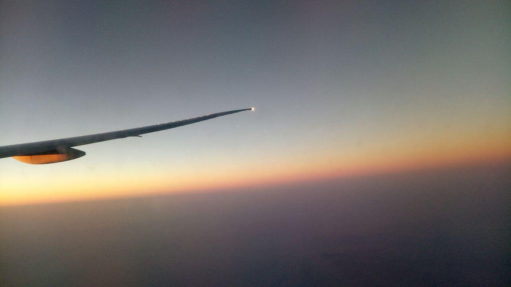
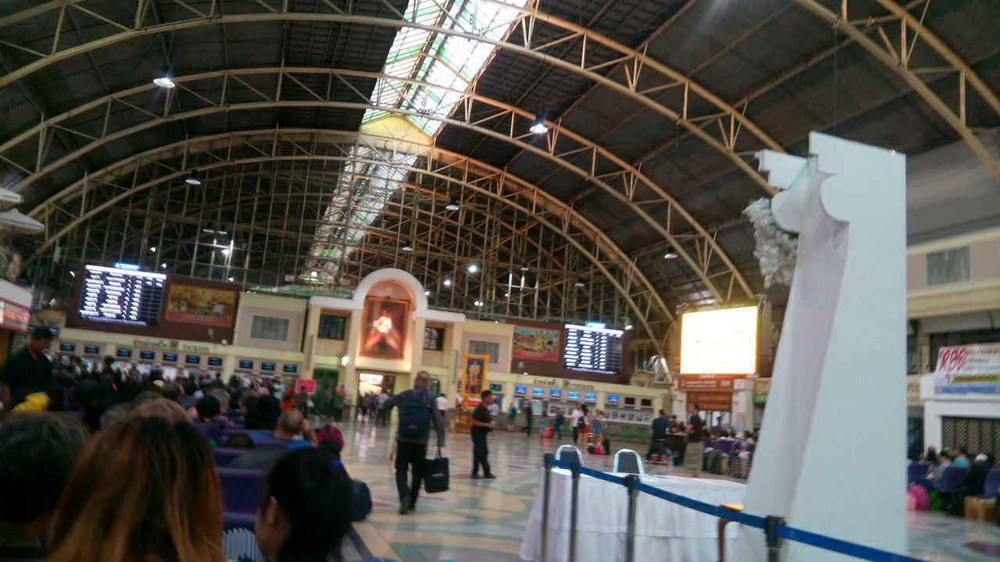
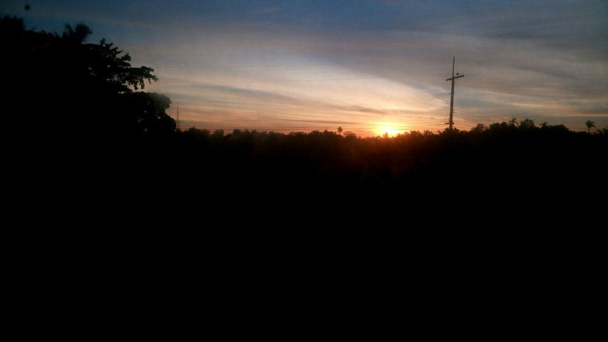
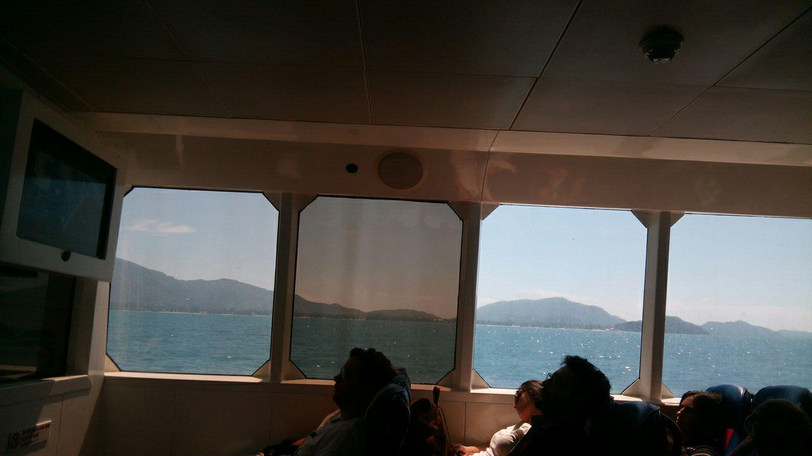
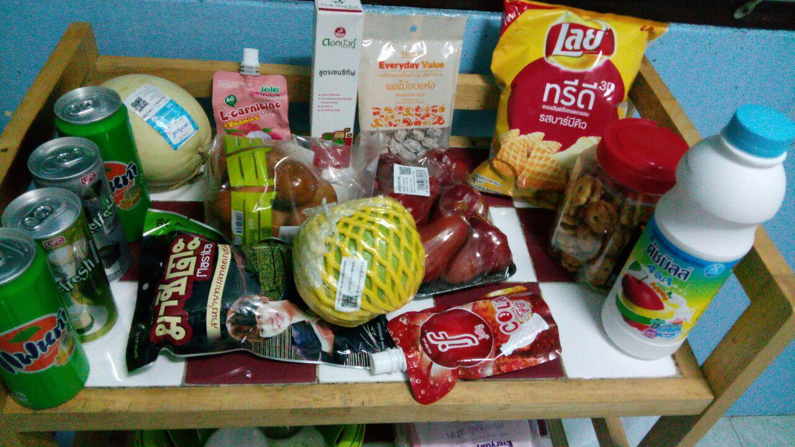

Первый раз в Таиланде. Из Иванова на Самуи
Февраль 2017 года.
Десять лет я отработал водителем. Кем только не рулил, на чём только не ездил. А потом в мою жизнь пришёл онлайн-покер, и именно он позволил мне выбраться в другую жизнь.
Тогда была золотая эпоха онлайн-покера, и я успел в ней поучаствовать. Это и позволило мне начать тайскую главу в своей жизни.
Когда работал на скорой помощи, ушёл в отпуск и за этот отпуск выиграл несколько своих зарплат. Решил, что надо увольняться и полностью переходить на покер.
Про покер: это моя личная история
Это не реклама азартных игр и не призыв играть. Я просто рассказываю, как всё было в моей жизни. Повторять мой путь не советую.
Тогда был популярен сайт обучения покеру PokerStrategy, где люди вели разные блоги. Я начал свой. Обсуждали в основном игры, раздачи, просто общались, кидали мемы, песенки. Но был и раздел с путешествиями, где люди рассказывали о местах, в которых жили или побывали.
И вот я загорелся Таиландом. Много покеристов тогда жило на Самуи.
Ещё в ноябре 2016 года я купил билет на февраль 2017-го. Думал, за несколько месяцев накоплю денег, закрою какие-то дела, оформлю всякие карточки и прочее.
Девять часов на иголках
Как сейчас помню: 6 февраля, день моего вылета в Бангкок.
Билет покупал у «Аэрофлота», на прямой рейс. Тогда я был жутким аэрофобом. Да и сейчас боюсь летать, но тогда любая пересадка для меня была большим стрессом.
Из Иванова до Шереметьева добрался на маршрутке. Варианта с поездом у меня тогда не было, пришлось ехать так. Долго, часов шесть, наверное, неудобно. Но приехал вовремя, до вылета оставалось ещё два часа.
Заранее онлайн прошёл регистрацию, выбрал место в хвосте самолёта. Там кресла стояли по два, а не по три. Не хотел сидеть втроём, хотел вдвоём. Рядом летела девушка, вроде бы из Чехии. Мы почти не общались, так что точно не скажу.
Перед полётом выпил успокоительное. Алкоголь пить не стал, решил не рисковать. Но успокоительное не помогло.
За девять часов я так и не уснул, толком не смог поесть. Смотрел фильмы, какие-то шоу и встретил рассвет. Весь полёт сидел как на иголках, с потными ладошками.
При этом полёт был абсолютно спокойный, без турбулентности. Даже давали классное мороженое, вкусное.

Первый вдох тайского воздуха
Помню свой первый вдох тайского воздуха ещё в рукаве, когда шёл из самолёта в аэропорт. Он уже там был очень горячий, влажный и с каким-то незнакомым мне запахом.
Помню огромную длиннющую движущуюся дорожку в аэропорту, которая произвела на меня сильное впечатление.
Снял первые баты в банкомате с комиссией 200 бат. Очень хотелось пить. Нашёл 7-Eleven в аэропорту, взял воду, банан и пирожок. За всё заплатил 60 бат.
Кстати, сейчас, спустя почти десять лет, мне кажется, цены остались условно такими же.
Но Бангкок не был моей конечной точкой. Мне нужно было на Самуи.
Поезд, автобус и паром
Ещё один полёт на самолёте я бы тогда не пережил, поэтому купил билет на поезд. Нестандартный вариант для начинающего путешественника по Таиланду, но я люблю поезда.
Был классный сервис 12GoAsia. Не знаю, работает он сейчас или нет. Тогда это был один из немногих, если не единственный вариант, где можно было купить комплексный билет на поезд вместе с паромом. Чтобы после железнодорожного вокзала тебя ещё довезли до причала и переправили на Самуи.
Вышло в районе 1 400 бат.
До железнодорожного вокзала я добрался сначала на надземном метро, потом на подземном. Всё по указателям, особых сложностей не было.
Офис компании, где я купил билет, находился прямо на выходе из метро. Там выдали билет и сказали, что всё, не очкуй, везде встретят, везде посадят.
По пути к вокзалу купил у бабушки ананас за 20 бат. Он был сильно слаще, чем в России.
До поезда оставалось ещё пять часов. После бессонного перелёта я почти всё это время без памяти продремал на скамейке.

Поезд задержался на полчаса. Соседом в купе оказался Пауль, немец лет двадцати пяти, автостопщик, приехавший с Филиппин. Поболтали полчаса, как могли с моим английским, и легли спать.
Как же круто спать лёжа!
Ехали двенадцать часов. Встретил ещё один рассвет, теперь уже из окна поезда.
В купе был свой умывальник, а в начале вагона даже душ. Правда, я его заметил только на выходе и сходить в него не успел. Был очень удивлён после российских поездов. Тогда они были сильно хуже, чем сейчас.

На перроне нас встретила говорливая женщина, посмотрела мой ваучер и отвела к автобусу. До отправления было сорок минут, решил перекусить.
Заказал рис с овощами и фруктовый коктейль. Меня не так поняли, принесли сэндвич и какой-то замороженный йогурт. Первое знакомство с заказом еды получилось так себе.
Дальше на автобусе доехал до парома. Ещё полтора часа — и мы уже плывём.
И вот наконец Самуи.

Тайская хибара и будущий байк
На острове меня встретил Андрей, покерист с форума. Ему огромное спасибо.
Отвёз меня домой на своём байке, который пару раз перегревался и приходилось останавливаться на перекур. Но в итоге доехали, я заселился и пару часов поспал.
Дом мне, кстати, тоже помогли снять ребята с покерного форума. Там был парень, который занимался риелторством. Он мне нашёл такую дешёвую тайскую хибару, на которую сейчас я бы даже не посмотрел.
А потом мы уже поехали смотреть мой будущий байк.
Я решил, что на три месяца выгоднее купить, чем арендовать. Это, конечно, была так себе идея, но тогда я был неопытный, не такой опытный, как сейчас.
Нашёл карбюраторный Suzuki за 12 тысяч бат, на котором мне было более-менее удобно сидеть, потому что я высокий. На большинстве байков колени мешают рулить.
Правда, была загвоздка: на байке потеряли номер. Обещали восстановить за пару недель. Оставил тысячу бат задатка, а на первое время решил взять в аренду другой байк.
Покупать всё непонятное
Вечером поел в местной кафешке за 60 бат. Понравилось. Потом заехал в Tesco и набрал там всего подряд.
Вообще, у меня вначале была тактика покупать то, про что я не знаю и не понимаю, что это. Так и решил знакомиться с тайской едой.

Одни фрукты напоминали сладкую картошку. Другие были похожи с виду на болгарский перец, а на вкус — как пресные яблоки.
Понравилась какая-то кола из пакетика, похожая на желе, зелёная фанта. А вот кисло-солёные конфеты со вкусом тамаринда оказались просто жесть. Решил оставить для друга, который должен был приехать через месяц))
Так и началась моя первая поездка в Таиланд. До Самуи добрался, жильё нашёл, байк присмотрел. Дальше собирался осмотреться и через день-другой продолжить играть в покер.
Продолжение следует.
Цены в этой истории относятся к февралю 2017 года. Но мне кажется, многие из них до сих пор примерно такие же.